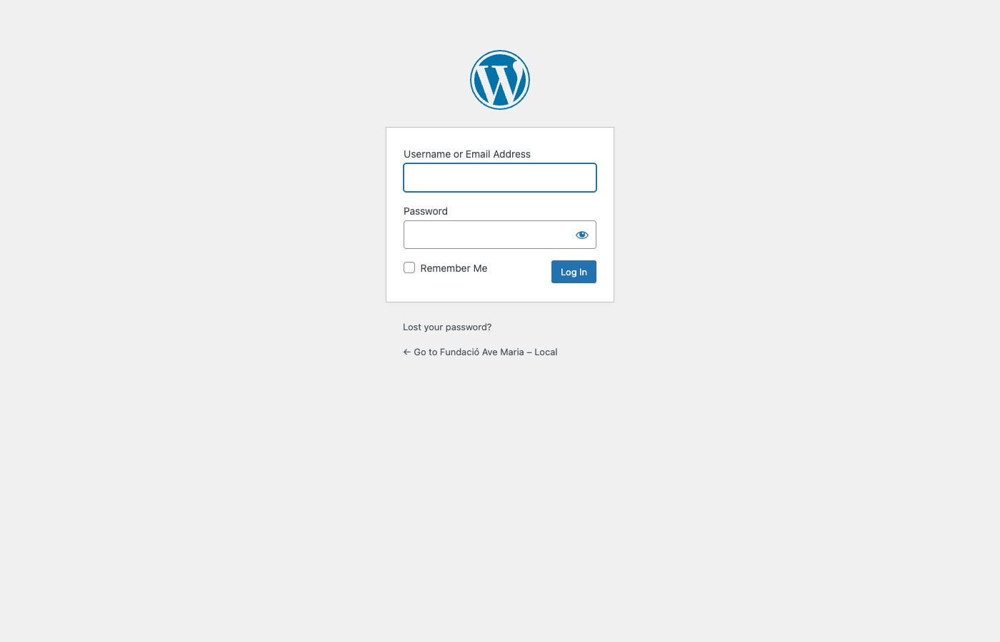
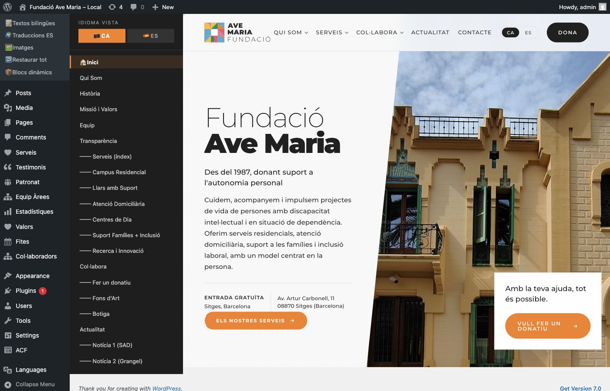
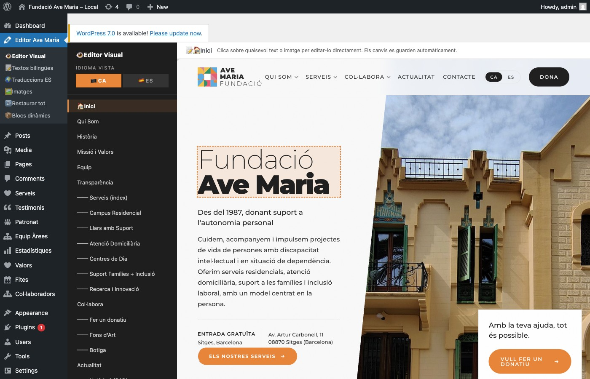
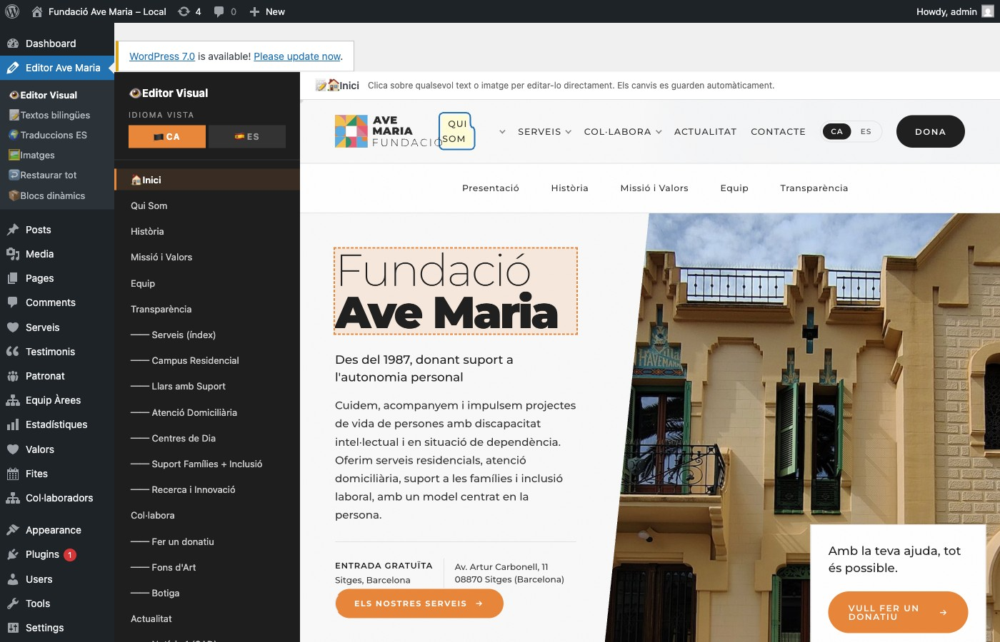
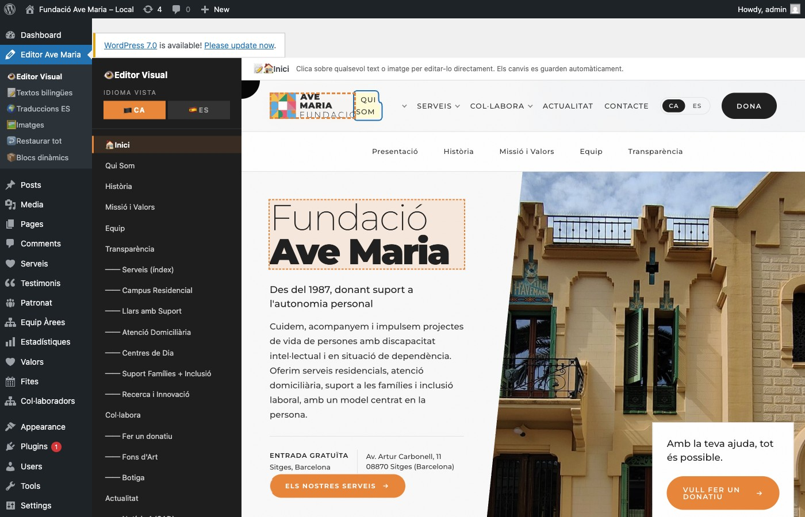
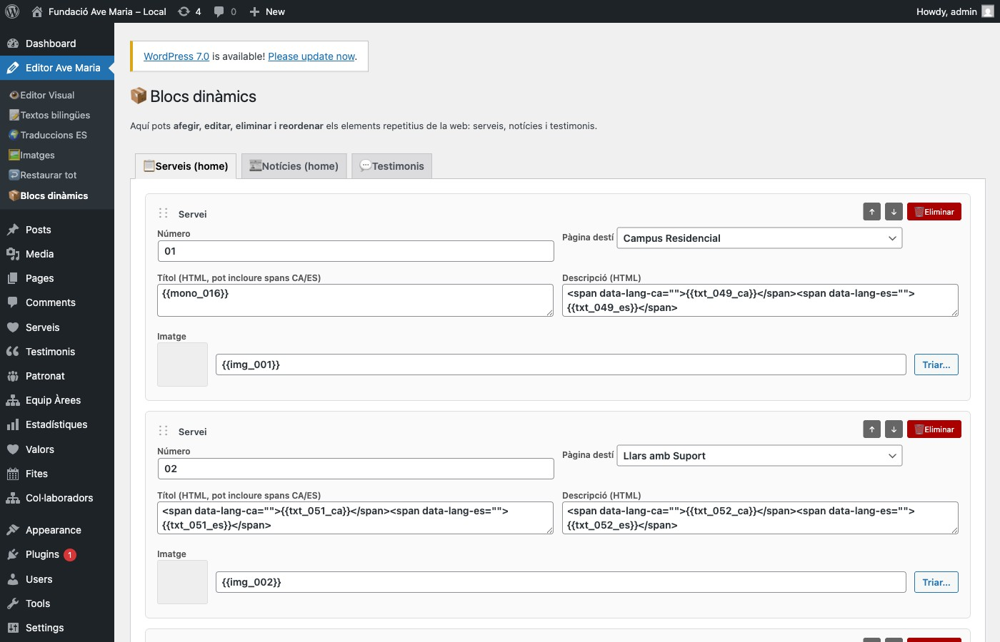
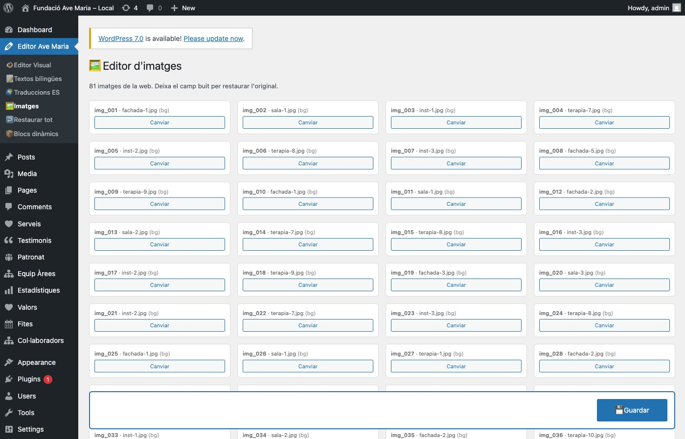

Aprèn a canviar textos, imatges i bloc de contingut al web de la Fundació. Sense saber programar.
Versió 1.0 · Panell Editor Visual
Preparat per Zoopa · 2026
Índex
1
Introducció
3
2
Com entrar al panell
4
3
Editor Visual — Vista general
5
4
Canviar un text (pas a pas)
6
5
Canviar una imatge
8
6
Canviar de pàgina i d'idioma
9
7
Afegir / eliminar bloc de contingut
10
8
Editar en llista (opció avançada)
11
9
Restaurar el web original
12
10
Preguntes freqüents
13
1. Introducció
Aquesta guia t'ensenya a modificar el web de la Fundació Ave Maria de manera senzilla. La web es gestiona amb WordPress i tenim un panell especial anomenat Editor Visual pensat perquè puguis canviar textos i imatges directament sobre la vista real del web, sense entendre codi.
Què podràs fer amb aquesta guia
Modificar qualsevol text (en català i castellà).
Substituir qualsevol imatge del web.
Afegir, eliminar o reordenar serveis, notícies i testimonis.
Restaurar la web a l'original si t'has equivocat.
💡 Regla d'or
Els canvis es guarden automàticament al fer clic fora del text o al prémer Enter. Veuràs una notificació verda a baix a la dreta quan es guardi correctament.
2. Com entrar al panell
Obre el navegador (Chrome, Safari, Firefox) i escriu l'adreça del panell d'administració. Introdueix el teu usuari i contrasenya.
URL del panell:www.avemariafundacio.org/wp-admin
Usuari:(el que t'hagin donat)
Contrasenya:(la que t'hagin donat)

Fig. 1 — Pantalla d'accés al panell d'administració
⚠️ Molt important
Si algú comparteix el teu usuari i contrasenya podrà entrar i modificar la web. Guarda les credencials en un lloc segur i canvia-les de tant en tant.
3. Editor Visual — Vista general
Un cop a dins, al menú lateral esquerre veuràs "Editor Ave Maria". És on trobaràs totes les eines per editar el web. La primera opció, "👁️ Editor Visual", és la que faràs servir el 90% del temps.

Fig. 2 — Editor Visual: sidebar amb pàgines a l'esquerra i vista del web a la dreta
Zones de l'Editor Visual
A. Selector d'idioma
Botons 🏴 CA🇪🇸 ES. Canvia el que veus a la vista de la dreta. Si tries CA, editar un text guardarà la versió catalana.
B. Llista de pàgines
Totes les pàgines del web (Inici, Qui Som, Història, Serveis, els 6 serveis individuals, Actualitat, notícies, Contacte…). Fes clic a qualsevol per veure-la.
C. Vista del web
Es veu exactament igual que ho veurà un visitant. Aquí és on faràs clic sobre els textos o imatges per editar-los.
D. Notificació de guardat
Quan modifiques alguna cosa, apareix un rètol verd "✅ Guardat" a baix a la dreta durant un moment.
4. Canviar un text (pas a pas)
L'operació més habitual. En 3 passos.
1Passa el ratolí per sobre del text
Quan et col·loquis sobre qualsevol text editable, apareixerà un marc taronja discontinu. Això indica que el text es pot modificar.

Fig. 3 — Passa el ratolí per sobre. El text es ressalta amb un marc taronja discontinu.
2Fes clic per començar a editar
El text es converteix en editable: fons groc clar amb marc blau. Ja pots escriure o esborrar amb el teclat.

Fig. 4 — Text en mode edició: fons groc clar + marc blau. Ja pots escriure.
3Guarda els canvis
Prem Enter o fes clic fora del text. El text es guarda automàticament i apareix la notificació verda "✅ Guardat" a baix a la dreta.
💡 Truc útil
Si vols cancel·lar un canvi que estaves fent, prem Escape (Esc) al teclat i el text tornarà al valor original.
ℹ️ Sobre els idiomes
Els textos del web tenen dues versions: català i castellà. Quan edites amb el selector d'idioma en CA, guardes la versió catalana. Canvia a ES i edita el mateix text per canviar la castellana. Els visitants veuran cadascuna segons l'idioma triat al header del web.
5. Canviar una imatge
Substitueix qualsevol imatge del web per una altra que pugis o que ja tinguis a la biblioteca.
1Passa el ratolí sobre la imatge
Apareixerà un marc taronja discontinu al voltant i un rètol amb el text "📷 Clic per canviar imatge" a la cantonada superior esquerra.

Fig. 5 — Passa el ratolí sobre una imatge per veure el rètol taronja.
2Fes clic i tria la nova imatge
S'obrirà la Biblioteca de mèdia de WordPress. Pots:
Pujar una imatge nova del teu ordinador (arrossega-la o fes clic a "Selecciona fitxers").
Triar-ne una ja existent a la biblioteca.
Un cop tries la imatge, fes clic al botó blau "Selecciona" a baix a la dreta.
3La imatge canvia automàticament
La vista es recarrega i veuràs la imatge nova al seu lloc. Apareix la notificació verda "✅ Imatge canviada".
⚠️ Recomanacions per a les imatges
Format: JPG per a fotos, PNG per a gràfics amb transparència.
Mida mínima recomanada: 1200 píxels d'ample.
Pes: intenta que no passi de 500 KB per imatge (fes servir un compressor com tinypng.com).
Respecta la proporció original de la imatge que substitueixes.
6. Canviar de pàgina i d'idioma
Per navegar entre les diferents pàgines del web des de l'editor, fes servir el sidebar de l'esquerra.
Canviar de pàgina
Fes clic a qualsevol nom de pàgina del llistat esquerre. La vista de la dreta carrega aquella pàgina i pots començar a editar-la. Les pàgines estan agrupades:
Pàgines principals: Inici, Qui Som, Història, Missió i Valors, Equip, Transparència.
Serveis: Índex + Campus Residencial, Llars amb Suport, Atenció Domiciliària, Centres de Dia, Suport Famílies + Inclusió, Recerca i Innovació.
Col·labora: Fer un donatiu, Fons d'Art, Botiga.
Notícies: Actualitat + 6 notícies individuals.
Contacte.
Canviar d'idioma
Els botons 🏴 CA i 🇪🇸 ES a la part alta del sidebar canvien l'idioma que estàs veient. Recorda:
💡 Regla clau
Si vols editar el text en català, primer activa 🏴 CA, després fes clic al text i escriu.
Si vols editar la versió castellana, activa primer 🇪🇸 ES i fes el mateix.
7. Afegir / eliminar bloc de contingut
Al menú "📦 Blocs dinàmics" pots gestionar la estructura: afegir un nou servei, eliminar una notícia antiga o reordenar els testimonis.

Fig. 6 — Panell de Blocs dinàmics amb els tres tipus de contingut editable.
Tres tipus de blocs
Bloc
Què gestiona
Camps
📋 Serveis
Les targetes de serveis del carrusel de la portada
Número, títol, descripció, imatge, pàgina destí
📰 Notícies
Les 3 notícies destacades a la portada
Data, titular, imatge, pàgina destí
💬 Testimonis
Els testimonis del carrusel "Veus"
Text, autor, rol, color de marca
Accions disponibles a cada bloc
↑ ↓ — Reordenar el bloc amunt o avall.
🗑️ Eliminar — Esborrar aquest bloc (demana confirmació).
+ Afegir — Botó taronja al final de cada llista per crear un nou bloc en blanc.
⚠️ No oblidis Guardar
A diferència de l'Editor Visual, aquí els canvis no es guarden automàticament. Un cop hagis fet totes les modificacions, prem el botó blau "💾 Guardar" a baix de la pàgina.
8. Editar en llista (opció avançada)
Si prefereixes editar textos en llista (sense la vista visual), tens tres opcions al menú lateral:
Opció del menú
Per a què serveix
📝 Textos bilingües
Els 265 textos que ja tenen versió catalana i castellana (menús, botons, títols traduïts). Cada un amb 2 caselles CA i ES juntes.
🌍 Traduccions ES
Els 747 textos que originàriament només tenien versió catalana. Aquí pots afegir la traducció castellana si en falta alguna.
🖼️ Imatges
Vista de graella amb totes les 81 imatges del web i botó "Canviar" a cadascuna.

Fig. 7 — Panell d'edició d'imatges en llista. Cada imatge té botó "Canviar".
Quan utilitzar cada mode?
Editor Visual: per a canvis puntuals veient com queda al web.
Textos bilingües / Traduccions ES: per a canvis massius (per exemple, revisar totes les traduccions d'una vegada).
Imatges (llista): per veure totes les fotos de cop i canviar-ne diverses.
9. Restaurar el web original
Si t'has equivocat i vols tornar al disseny original, tens un botó especial.
⚠️ Precaució màxima
Aquesta acció esborra TOTS els canvis que has fet des del panell (textos, traduccions i imatges) i restaura l'estat original de la maqueta. No es pot desfer.
Com fer-ho
Ves a Editor Ave Maria → ↩️ Restaurar tot al menú lateral.
Llegeix el missatge d'avís.
Fes clic al botó vermell "🗑️ Restaurar tot al valor original".
Confirma el diàleg de confirmació.
El web tornarà a l'estat inicial. Els blocs dinàmics (serveis, notícies, testimonis) es conserven — només s'esborren els canvis de textos i imatges.
10. Preguntes freqüents
He canviat un text i no el veig al web públic
Comprova que:
Hagis vist la notificació verda "Guardat" després del canvi.
Hagis refrescat la pàgina del web públic amb Cmd+Shift+R (Mac) o Ctrl+F5 (Windows). El navegador pot tenir cache.
Si has editat en CA però estàs veient la versió ES, canvia l'idioma al selector CA/ES del web.
He esborrat un servei / notícia i vull recuperar-lo
De moment no hi ha "paperera". L'única forma és tornar a crear-lo manualment amb el botó "+ Afegir". Per això sempre és millor pujar/baixar els blocs abans d'eliminar-los, per si de cas.
La imatge que he pujat es veu deformada o retallada
És perquè la proporció (relació ample-alt) no coincideix amb la que espera aquell lloc. Prepara la imatge amb la mateixa proporció que la que substitueixes. Per exemple, si la imatge original és quadrada (1:1), puja també una quadrada.
Puc afegir un idioma més (per exemple, anglès)?
De moment el web només té CA i ES. Si en algun moment cal afegir-ne més, cal ampliar el plugin de Polylang. Contacta amb Zoopa per estudiar-ho.
Com puc previsualitzar sense publicar?
Ara mateix qualsevol canvi es publica immediatament. Si necessites treballar en "mode esborrany" sense que els visitants ho vegin, contacta amb Zoopa per configurar un entorn de staging (versió de proves).
Se m'ha oblidat la contrasenya
A la pantalla de login (Fig. 1) hi ha un enllaç "Ha oblidat la contrasenya?". Introdueix el teu email i rebràs un enllaç per restablir-la. Si tampoc funciona, contacta amb Zoopa.
Puc donar accés a altres persones de l'equip?
Sí. Ves a Usuaris → Afegir nou al menú lateral de WordPress. Crea un usuari amb rol "Editor" (pot editar contingut però no gestionar plugins). Per rols més tècnics, escull "Administrador".
Aquesta guia forma part del paquet d'entrega del web de la Fundació Ave Maria.
Per qualsevol dubte o incidència, contacta amb Zoopa Smart Agency — zoopa.es